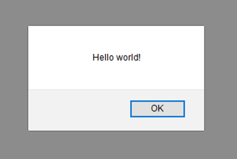

Interaction dans une page Web grâce à JavaScript⚓︎
Introduction⚓︎
Qu'est-ce que JavaScript?⚓︎
JavaScript a été créé en 1995 par Brendan Eich. C'est un langage de programmation de scripts principalement employé dans les pages web interactives mais aussi pour les serveurs avec l'utilisation (par exemple) de Node.js.
Note
On abrège souvent JavaScript par JS, ce qui sera parfois fait par la suite.
Avec les technologies HTML et CSS, JavaScript est parfois considéré comme l'une des technologies cœur du World Wide Web. Le langage JavaScript permet des pages web interactives, et à ce titre est une partie essentielle des applications web. Une grande majorité des sites web l'utilisent, et la majorité des navigateurs web disposent d'un moteur JavaScript dédié pour l'interpréter (indépendamment des considérations de sécurité qui peuvent se poser le cas échéant).
Du code JavaScript peut être intégré directement au sein des pages web, pour y être exécuté sur le poste client. C'est alors le navigateur web qui prend en charge l'exécution de ces programmes appelés scripts et qui permet l'interaction avec l'utilisateur.
Dans une page Web (programme de 1ère NSI)⚓︎
Généralement, JavaScript sert à contrôler les données saisies dans des formulaires HTML, ou à interagir avec le document HTML via le DOM (Document Object Model). Il est aussi utilisé pour réaliser des applications dynamiques, des transitions, des animations ou manipuler des données réactives, à des fins ergonomiques ou cosmétiques.
Sur un serveur Web⚓︎
JavaScript peut également être utilisé comme langage de programmation sur un serveur HTTP à l'image des langages comme PHP, Python, ASP, etc. La plateforme Node.js est actuellement très utilisée pour développer et déployer des applications Web entièrement basées sur JavaScript, que ce soit côté client ou côté serveur.
Premiers pas avec JavaScript⚓︎
Comme indiqué précédemment, le JavaScript est un langage essentiellement utilisé avec le HTML, vous allez donc apprendre dans ce chapitre comment intégrer ce langage à vos pages Web pour les rendre dynamiques. Il y a deux façons d'écrire le code JS d'une page Web :
- 👎 soit directement dans le HTML en utilisant la balise
<script>dans laquelle on écrit en langage JavaScript :
<!DOCTYPE html>
<html>
<head>
<meta charset="utf-8">
<title>Titre onglet</title>
</head>
<body>
<!-- le javascript dans la balise <script> -->
<script>
alert("Hello World!");
</script>
</body>
</html>
Pour voir et exécuter le code sur CodePen : exemple_1
Note
Cette façon de faire est obsolète, mais encore présente dans beaucoup de pages Web anciennes. On peut s'autoriser à l'utiliser pour des petits essais dans un soucis de simplifications mais c'est à proscrire pour des applications plus conséquentes.
- 👍 soit dans un fichier séparé au format .js : on écrit le code JS dans un fichier appelé (par exemple) script.js et on indique dans le fichier HTML d'exécuter ce fichier JS:
Le code HTML:⚓︎
<!DOCTYPE html>
<html>
<head>
<meta charset="utf-8">
<title>Titre onglet</title>
</head>
<body>
<!--
tout le
code HTML
ici
-->
<script src="script.js"></script> <!-- pour exécuter le fichier `script.js` -->
</body>
</html>
Le code JS écrit dans script.js :⚓︎
alert("Hello World!");
Dans le HTML, on donne à la balise <script> un attribut src (pour source) dont la valeur est le chemin vers le fichier JS à exécuter. Vous remarquerez que la ligne a été écrite juste avant la fermeture du <body> et après le contenu HTML du corps de la page.
Pour voir et exécuter le code sur CodePen : exemple_2
Note
Même si cela impose d'utiliser deux fichiers distincts, cette pratique est recommandée notamment car le code est plus facilement maintenable car cela a l'avantage de bien séparer les choses : le JS reste dans un fichier js et le fichier .html ne contient que du HTML. Par ailleurs, un fichier .js peut dans ce cas être appliqué à plusieurs documents HTML.
Dans les deux cas, l'instruction alert("Hello World!") est exécutée. Comme la fonction alert permet d'afficher un message à l'écran dans une fenêtre popup, on obtient dans les deux situations l'écran suivant lorsque l'on ouvre la page HTML dans le navigateur :

Interaction avec l'utilisateur dans une page Web⚓︎
A faire⚓︎
Dans cette activité vous allez apprendre à utiliser JavaScript pour créer des pages Web interactives. On y verra principalement comment gérer certains événements lors de clics sur des boutons. Cette activité est divisée en 4 parties. Dans chacune d’elles, une vidéo est à visionner puis plusieurs défis sont proposés. Votre objectif est de trouver une solution à ces défis !
Modifier les styles d'une balise⚓︎
Défi_1
Créez une page avec 3 boutons qui permettent de choisir la couleur de fond de la page parmi 3 couleurs.
Vous ferez ce défi sur Capytale avec ce lien
Pour réaliser ce défi, regardez cette vidéo (Vous pouvez avancer à 3'15''):
Note
- L'instruction
console.logne fonction pas sur Capytale, vous pouvez remplacerconsole.log(...)paralert(...). - Dans Capytale l'instruction
<script src="script.js"></script>doit être placé en fin debodyet non pas danshead.
Corrigé
Essayez vous même avant de regarder le corrigé. Corrigé
Changer le texte d'une balise⚓︎
Défi_2
Créez une page avec 2 boutons qui permettent d’afficher deux textes différents dans un paragraphe (le 1er bouton affiche un texte et le 2ème bouton en affiche un autre).
Vous ferez ce défi sur Capytale avec ce lien
Pour réaliser ce défi, regarder cette vidéo :
Corrigé
Essayez vous même avant de regarder le corrigé. Corrigé
Utiliser des variable simples⚓︎
Défi_3
Créez un "Compteur de clic", c'est à dire une page avec 1 bouton et une zone d'affichage dont la valeur initiale est 0 et qui augmente de 1 à chaque clic. (Bonus : ajoutez un deuxième bouton de remise à zéro)
Vous ferez ce défi sur Capytale avec ce lien
Pour réaliser ce défi, regarder cette vidéo :
Note
Vous pouvez remplacer console.log(...) par alert(...).
Corrigé
Essayez vous même avant de regarder le corrigé. Corrigé
Utiliser les données d'un champ de saisie⚓︎
Défi_4
Créez une page contenant un champ de saisie et un bouton. L’utilisateur entre son année de naissance et le bouton permet d’afficher son âge dans une zone d’affichage (un paragraphe par exemple).
Vous ferez ce défi sur Capytale avec ce lien
Pour réaliser ce défi, regarder cette vidéo :
Corrigé
Essayez vous même avant de regarder le corrigé. Corrigé
Défis supplémentaires⚓︎
Défi_5
Créez une page avec un paragraphe dont la couleur du texte est modifiée à son survol. Bonus : le paragraphe doit revenir à son état initial à la fin du survol. En lien avec la vidéo "Modifier les styles d'une balise".
Défi_6
Créez une page avec un bouton permettant d’échanger le contenu de deux paragraphes. En lien avec la vidéo "Changer le texte d’une balise".
Défi_7
Créez une page avec un bouton et deux champs de saisie. Au clic sur le bouton, la somme des deux entiers entrés par l’utilisateur doit s’afficher dans une zone d’affichage (un paragraphe par exemple). En lien avec la vidéo "Utiliser les données d'un champ de saisie".
Défi_8
Créez une page avec un bouton et trois champs de saisie. Au clic sur le bouton, la couleur de fond de la page doit prendre la couleur RVB dont les composantes R, V et B ont été entrées par l’utilisateur. Exemple : si l’utilisateur entre 5, 121 et 143 dans les 3 zones de saisie, alors le fond de la page doit prendre la couleur rgb(5,121,143).
En lien avec la vidéo "Utiliser les données d'un champ de saisie".
Voici un lien vers les corrections des défis 7 et 8 :
- Défi 7 : https://replit.com/@beckerg/Defi7#index.html
- Défi 8 : https://replit.com/@beckerg/Defi8#index.html
La suite de ce cours constitue un résumé de ce qui est abordé dans les défis et leurs vidéos associées. Il est donc important de le lire et l'apprendre une fois les défis terminés.
2 Dans ce qui suit, comme dans les vidéos, on s'attache à écrire un code JavaScript simple et qui fonctionne dans la majorité des cas afin de ne pas entrer dans des considérations trop techniques du langage.
En particulier, on utilise var pour déclarer toutes les variables, quelles que soient leur nature ; on utilise querySelector pour sélectionner un élément HTML, quel qu'il soit, etc.
Les événements⚓︎
En JavaScript, un événement est une action qui se produit et qui possède deux caractéristiques essentielles:
- C'est une action qu'on peut « écouter », c'est-à-dire une action qu'on peut détecter car le système va nous informer qu'elle se produit ;
- C'est une action à laquelle on peut « répondre », c'est-à-dire qu'on va pouvoir attacher un code à cette action qui va s'exécuter dès qu'elle va se produire.
Un événement peut être associé à n'importe quel élément HTML (un bouton <button>, un paragraphe <p>, un titre <h.>., un bloc <div> etc.). Il existe beaucoup d'événements (plus d'une centaine), en voici quelques-uns parmi les plus importants :
| Événement | Description |
|---|---|
| click | Cliquer sur l'élément |
| dbiclick | Double-cliquer sur l'élément |
| mouseover | Faire entrer le curseur sur l'élément |
| mouseout | Faire sortir le curseur de l'élément |
| keydown | Appuyer (sans relâcher) sur une touche de clavier sur l'élément |
| keyup | Relâcher une touche du clavier |
| change | Changer la valeur d'un champ de formulaire |
Définir des gestionnaires d'événements⚓︎
Pour écouter et répondre à un événement, on définit ce qu'on appelle des gestionnaires d'événements chargés à la fois d'écouter le déclenchement d'un événement et d'exécuter le code associé dès que l'événement se produit.
Aujourd'hui, en JavaScript, il existe trois grandes façons de définir un gestionnaire d'événements:
- On peut utiliser des attributs HTML de type événement (obsolète donc à ne plus utiliser) ;
- On peut utiliser des propriétés JavaScript liées aux événements;
-
On peut utiliser la méthode addEventListener() (recommandé : c'est celle présentée dans les vidéos).
-
Commes les deux premières méthodes sont encore largement répandues (y compris dans des exercices de BAC récents...), on les présente également ci-après. C'est pour que vous ne soyez pas perturbés si vous rencontrez ces pratiques un jour dans votre vie (ne sait-on jamais :).
Voici les trois méthodes présentées sur un exemple où un clic sur un bouton d'une page Web déclenche l'ouverture d'une fenêtre popup.
Méthode 1 : Utiliser un attribut HTML du gestionnaire événement⚓︎
Le code HTML (extrait) :⚓︎
<body>
<button onclick="afficheMsg()">Clic</button>
<script src="script.js"></script>
</body>
Le code JS dans script.js:
function afficheMsg() {
alert("Hello World !");
}
Un attribut onclick est ajouté au bouton et sa valeur est la fonction JavaScript contenant le code à exécuter dès que l'événement survient. Souvent, les attributs possèdent le nom de l'événement qu'ils doivent écouter et gérer précédé par « on » (par exemple : onclick, onmouseover, onmouseout, etc.).
Comme dit précédemment, il n'est plus recommandé de procéder ainsi car cela revient à mélanger du code JS au code HTML : on conseille de garder tout le JS (donc la logique de programmation) dans un unique fichier.
Méthode 2 : Utiliser les propriétés JS liées aux événements⚓︎
Le code HTML (extrait)⚓︎
<body>
<button id="btn">Clic</button>
<script src="script.js"></script>
</body>
Le code JS dans script.js:⚓︎
var bouton = document.querySelector('#btn');
function afficheMsg() {
alert("Hello World !");
}
bouton.onclick = afficheMsg;
Dans le JS, la première ligne permet de sélectionner le bouton (via son id), on définit ensuite la fonction qui sera appelée, et enfin, la dernière ligne permet d'indiquer que lors du clic sur le bouton, c'est la fonction afficheMsg qui doit être appelée.
Méthode 3 A : Utiliser la méthode addEventListener()⚓︎
C'est le mécanisme d'événement le plus récent, le plus flexible et le plus performant (on ne rentrera pas dans les détails ici, mais si vous souhaitez en savoir plus, lisez cet excellent article de la MDN : Introduction aux événements).
C'est celui qui a été présenté dans les vidéos de l'activité et celui à privilégier aujourd'hui. Il fournit aux navigateurs une nouvelle fonction appelée addEventListener( \()\) qui fonctionne de la même manière que les propriétés du gestionnaire d'événements, mais la syntaxe est légèrement différente.
Le code HTML (extrait)⚓︎
<body>
<button id="btn">Clic</button>
<script src="script.js"></script>
</body>
Le code JS dans script.js :⚓︎
var bouton = document.querySelector('#btn');
function afficheMsg() {
alert("Hello World !");
}
bouton.addEventListener('click', afficheMsg);
Dans la fonction addEventListener, il faut spécifier deux paramètres : le nom de l'événement (ici click mais on peut remplacer par mouseover ou un autre) et le nom de la fonction à exécuter en réponse à cet événement.
Modifier les éléments de la page⚓︎
On considérera la page HTML ci-dessous pour les exemples qui suivent.
<body>
<h1 id="monTitre">Généralités sur JS</h1>
<p id="monPara">Voici une page Web interactive grâce à JavaScript.</p>
<button id="btn">Cliquez ici</button>
<script src="script.js"></script>
</body>
Généralités sur JS⚓︎
Voici une page Web interactive grâce à JavaScript. Cliquez ici
Fig. 1 - Rendu de la page dans le navigateur.
Voici quelques exemples de fonctions permettant de modifier les propriétés des éléments de la page Web. On suppose que ces fonctions sont appelées lors du clic sur le bouton de la page comme on l'a vu dans le paragraphe précédent.
Modifier le style d'un élément⚓︎
On peut modifier le style d'un élément HTML en utilisant la propriété style de cet élément. Par exemple, cette fonction Javascript
function changeStyles() {
var para = document.querySelector("#monPara");
var corps = document.querySelector("body");
para.style.color="red";
para.style.fontWeight="bold";
corps.style.backgroundColor="rgb(255,255,0)";
}
permet de modifier le style du paragraphe : le texte passe en rouge et en gras ; le style du corps de la page : la couleur de fond passe en jaune.
Généralités sur JS⚓︎
Voici une page Web interactive grâce à JavaScript.
Changer le⚓︎
Fig. 2 - Modification du style après le clic sur le bouton.
Pour voir et exécuter le code sur CodePen : https://codepen.io/jpbecker/pen/ExCxERm.
C@DEPEN⚓︎
Changer le texte d'une balise : la propriété innerHTML⚓︎
On peut changer le texte d'un élément HTML en utilisant la propriété innerHTML de cet élément. Par exemple, cette fonction Javascript
function changeTexte() {
var para = document.querySelector("#monPara");
para.innerHTML = "Bonjour tout le monde !";
}
permet de modifier le texte du paragraphe.
Généralités sur JS⚓︎
Bonjour tout le monde! Changer le!
Fig. 3 - Modification du texte après le clic sur le bouton.
Pour voir et exécuter le code sur CodePen : https://codepen.io/jpbecker/pen/HoNrZj.
C@DEPEN⚓︎
Utiliser des champs de saisie : la propriété value⚓︎
On ajoute dans le code HTML un élément <input> (= champ de saisie), avant le bouton, avec la ligne
<input type="text" id="zoneDeSaisie"/>
dans lequel on demande à l'utilisateur d'écrire son prénom.
Il est alors possible de récupérer le prénom saisi en utilisant la propriété value de cet élément. Par exemple, si l'utilisateur a saisi le prénom «Brendan » alors cette fonction Javascript
function disBonjour() {
var saisie = document.querySelector("#zoneDeSaisie");
var para = document.querySelector("#monPara");
let prenom = saisie.value;
let texte = "Bonjour " + prenom;
para.innerHTML = texte;
}
permet de récupérer le texte saisi grâce à la propriété value de l'élément (input) puis de construire la chaîne de caractères «Bonjour Brendan » et de l'écrire dans la paragraphe.
Généralités sur JS⚓︎
Bonjour Brendan
Brendan Cliquez ici
Fig. 4 - Récupération d'une valeur saisie par l'utilisateur.
Pour voir et exécuter le code sur CodePen : https://codepen.io/#pecker/pen/vLCLuZ/.
C \(\oplus\) DEPEN⚓︎
Bilan⚓︎
- Lors de la navigation sur le Web, les internautes interagissent avec leur machine par le biais des pages Web.
- L'Interface Homme-Machine (IHM) repose sur la gestion d'événements associés à des éléments graphiques munis de méthodes algorithmiques.
- Un événement est une action qui se produit, comme un clic sur un bouton (click), le survol d'un élément avec la souris (mouseover). etc.
- On peut « écouter» un événement pour détecter lorsqu'il se produit et on peut lui « répondre » en lui associant un code qui va s'exécuter dès qu'il se produit.
- Le langage JavaScript, associé au HTML, permet d'implémenter la gestion de ces événements en utilisant ce qu'on appelle un gestionnaire d'événement.
- Aujourd'hui, on recommande d'utiliser la méthode addEventListener pour gérer les événements.
Références :⚓︎
- Article Introduction aux événements de MDN Mozilla.
- Article Wikipédia sur JavaScript
- Cours de Pierre Giraud sur La gestion d'événements en JavaScript et la méthode addEventListener
- Cours Créez des pages web dynamiques avec JavaScript d'OpenClassrooms.
Germain Becker & Sébastien Point, Lycée Emmanuel Mounier, Angers